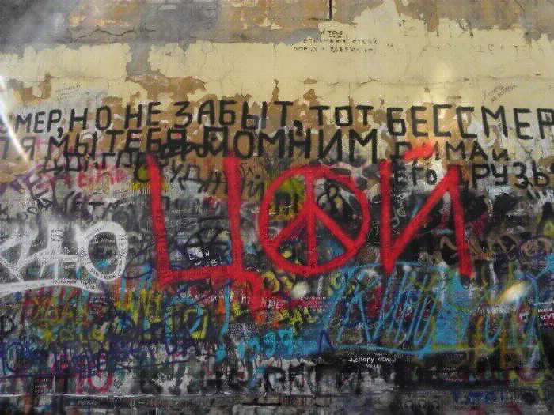

前几天打开音乐列表的时候看到了这个：
右边是《赛博朋克：边缘行者》的 OP，左边是 Kino 的《血型》。
Kino 的很多专辑封面都是构成主义风格，《血型》的这张封面我很早就见到过。
看上去我偶然发现了维克多崔和《赛博朋克2077》的奇妙联系。
这是莫斯科阿尔巴特区的崔墙（Стена Цоя）：

前苏联地区的很多城市都有维克多崔的纪念墙，比如圣彼得堡、阿拉木图、明斯克。
然后我在某个豆瓣帖子上发现，夜之城里也有：
注：Цой жив，意为崔还活着。
我原先在《地铁：离去》的列车里听到过《渴望改变》，也在《极乐迪斯科》的致谢里看到维克多崔的名字，但是当我看到崔甚至活到了2077的年代时，还是有些惊讶的。